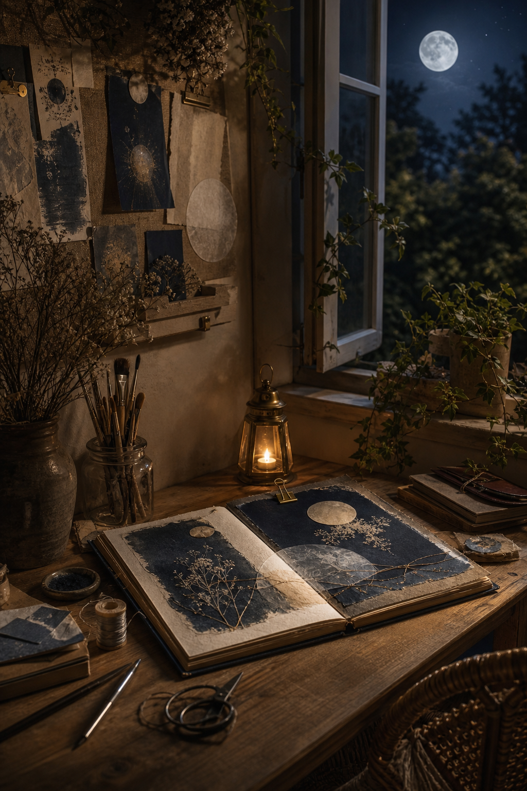
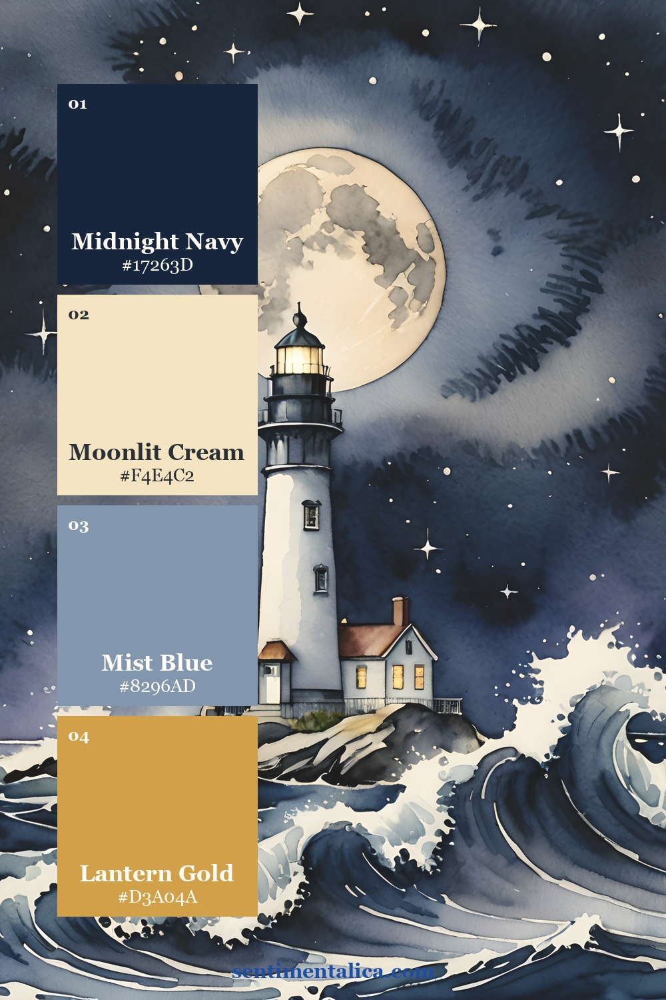
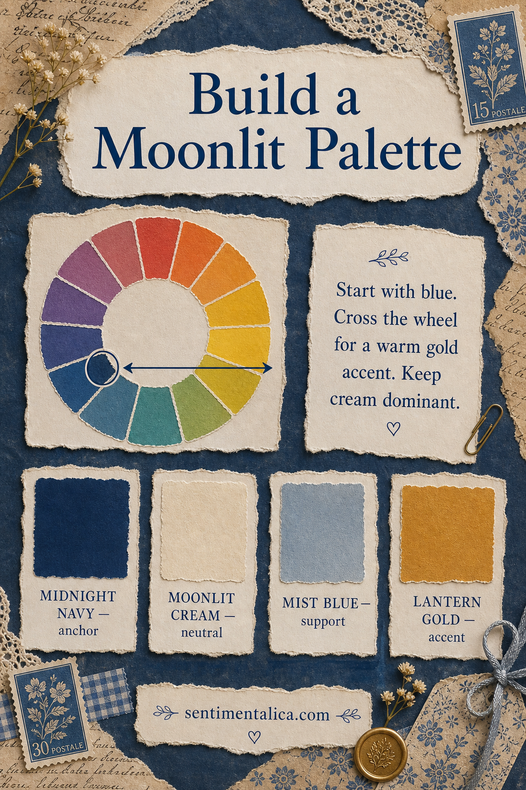
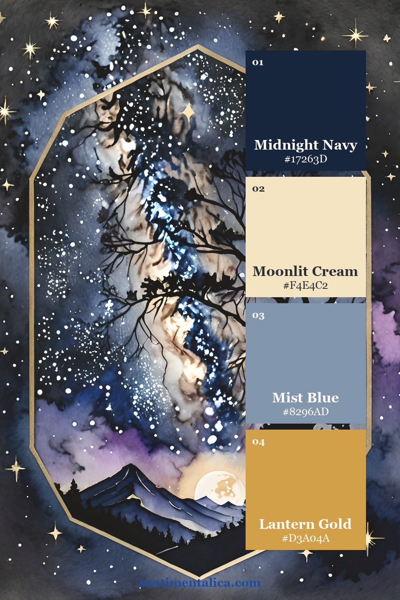
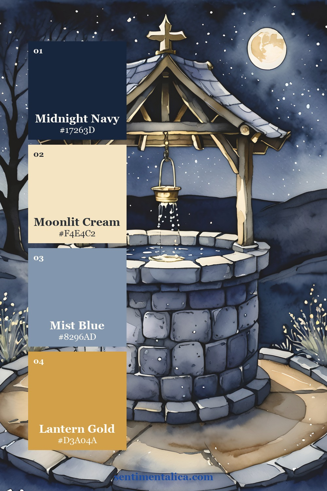
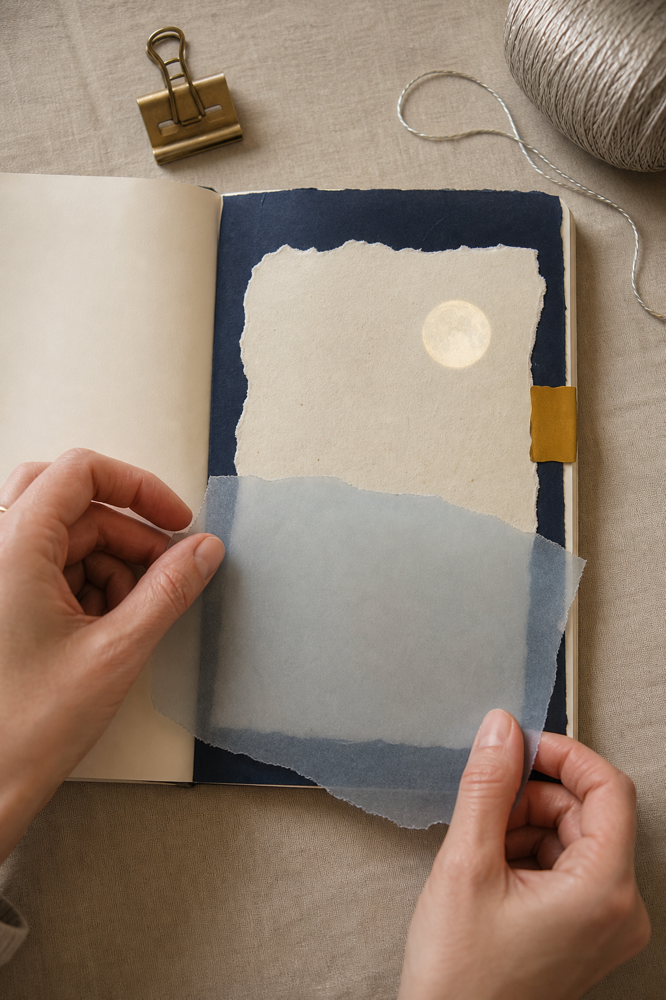
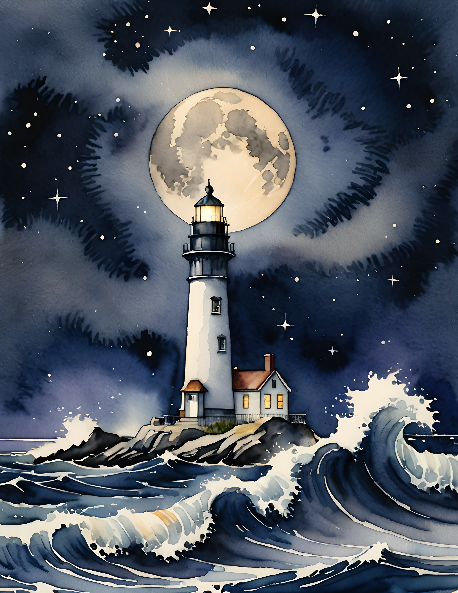
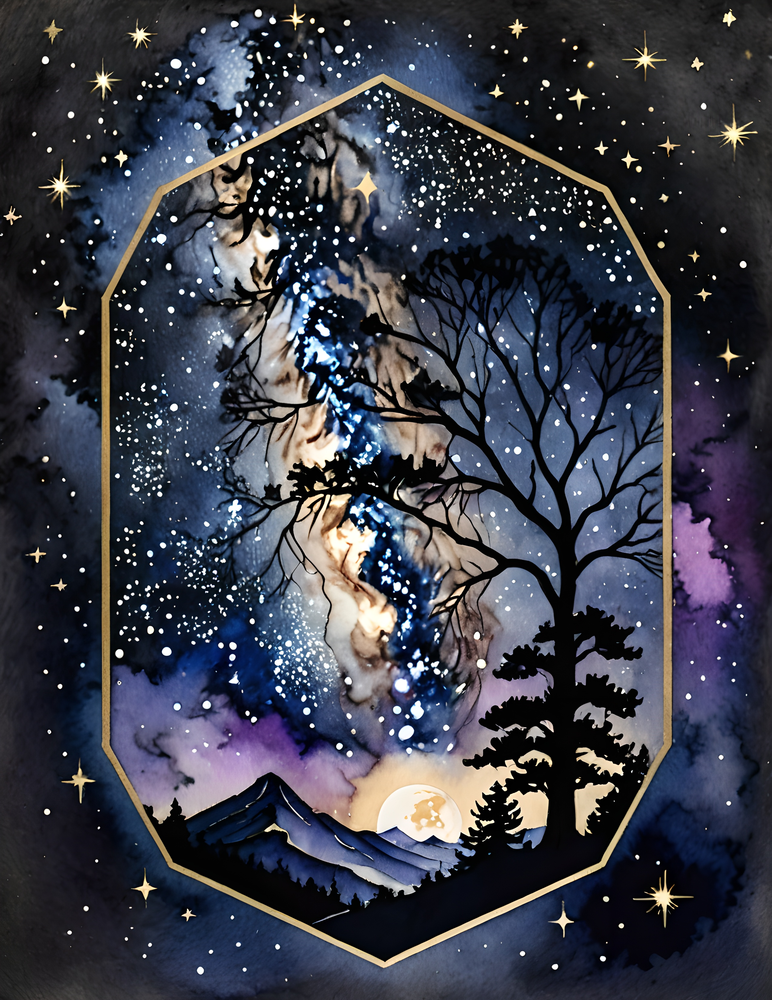
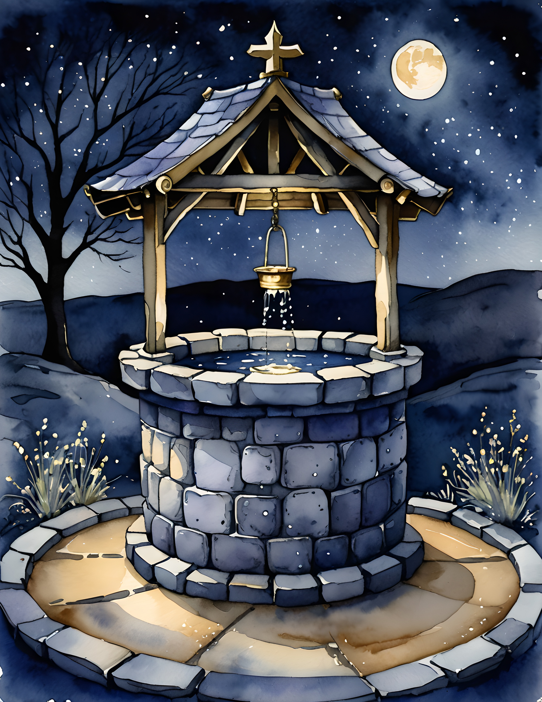

A moonlit journal page needs contrast more than decoration. Deep navy creates night, cream creates light, mist blue softens the transition, and a tiny warm gold detail gives the composition a human glow.

Let navy frame the night
Use midnight navy around the edge, beneath a pale focal, or across one side of the spread. It should feel like a field rather than a collection of small dark dots. One broad shape creates depth and gives light materials somewhere to shine.

Keep cream dominant
Moonlit cream is the reading space: a torn journaling block, vellum-backed label, or large handmade paper layer. It does not have to be pure white. A warm cream feels gentler against navy and makes the spread feel aged rather than graphic.

Cross the wheel for warmth
Blue’s opposite side of the wheel contains orange and gold. That is why one brass clip, amber window, ochre stitch, or golden tab feels so alive in a cool page. Keep the warm accent small. Its contrast will make it appear larger than it is.


Use mist blue as the bridge
Mist blue belongs between the dark and light values. Try translucent vellum, faded fabric, a watercolor wash, or a soft painted edge. Repeat it two or three times, but vary the size so the rhythm remains natural.

See the source pages
The Moon Glow collection moves from lighthouse beams to star-filled landscapes and old wells. Choose the page that matches your memory, then pull only four working colors from it rather than trying to reproduce every shade.



If you want a commercial-use watercolor image collection for nocturnal journals, quiet fantasy pages, or travel-at-night memories, the Moon Glow pack provides a cohesive starting world without dictating your final layout.
Disclosure: The palette infographic and styled workspace photographs were created with AI-assisted image tools. Palette cards and carousel images use genuine pages from the featured collection.